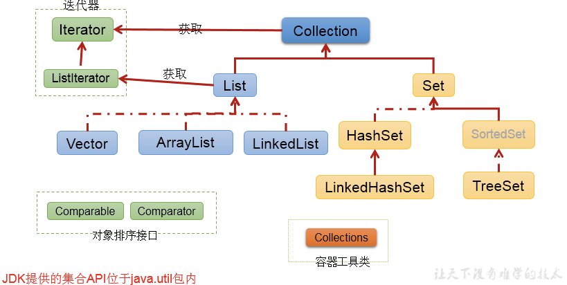
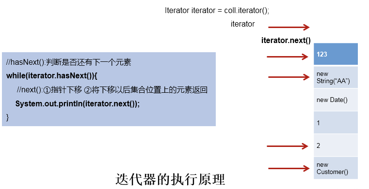
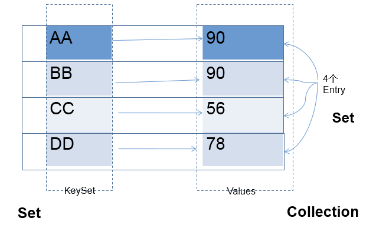
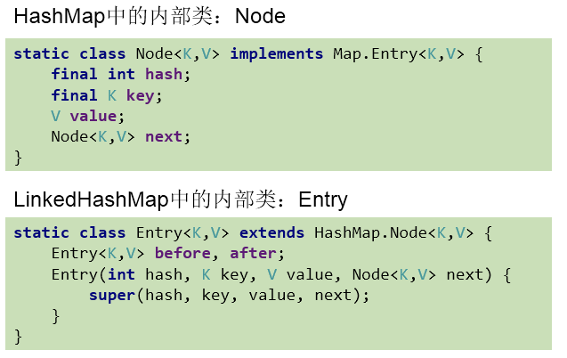
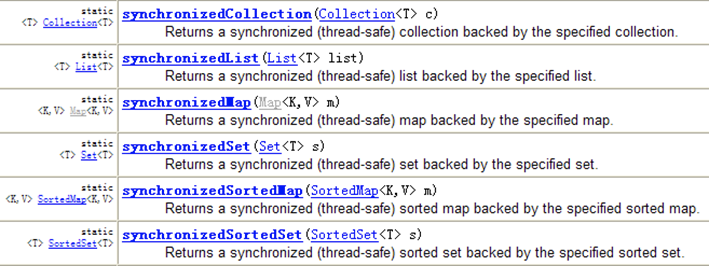

1 数组与集合
集合与数组存储数据概述：
- 集合、数组都是对多个数据进行存储操作的结构，简称Java容器。
- 说明：此时的存储，主要指的是内存层面的存储，不涉及到持久化的存储（.txt,.jpg,.avi，数据库中)
数组存储的特点：
- 一旦初始化以后，其长度就确定了。
- 数组一旦定义好，其元素的类型也就确定了。我们也就只能操作指定类型的数据了。比如：
String[] arr;int[] arr1;Object[] arr2;
数组存储的弊端：
- 一旦初始化以后，其长度就不可修改。
- 数组中提供的方法非常限，对于添加、删除、插入数据等操作，非常不便，同时效率不高。
- 获取数组中实际元素的个数的需求，数组没有现成的属性或方法可用。
- 数组存储数据的特点：有序、可重复。因此对于无序、不可重复的需求，不能满足。
集合存储的优点：解决数组存储数据方面的弊端。
2 Collection接口
2.1 Collection接口框架结构
Collection接口：单列集合，用来存储一个一个的对象。
- List接口：存储序的、可重复的数据。可以理解为 “动态”数组。
- ArrayList、LinkedList、Vector
- Set接口：存储无序的、不可重复的数据 –>高中讲的“集合”
- HashSet、LinkedHashSet、TreeSet

向Collection接口的实现类的对象中添加数据obj时，要求obj所在类要重写equals()。
2.2 Collection接口常用方法
- add(Object obj)，addAll(Collection coll)，size(),isEmpty()，clear();
- contains(Object obj)，containsAll(Collection coll)，remove(Object obj)，removeAll(Collection coll)，retainsAll(Collection coll)，equals(Object obj);
- hasCode()，toArray()，iterator();
2.3 Collection集合与数组间的转换
集合 —>数组：toArray()
Object[] arr = coll.toArray();
for(int i = 0;i < arr.length;i++){
System.out.println(arr[i]);
}拓展：数组 —>集合：调用Arrays类的静态方法asList(T … t)
List<String> list = Arrays.asList(new String[]{"AA", "BB", "CC"});
System.out.println(list);
List arr1 = Arrays.asList(new int[]{123, 456});
System.out.println(arr1.size());//1
List arr2 = Arrays.asList(new Integer[]{123, 456});
System.out.println(arr2.size());//23 Iterator接口与foreach循环
遍历Collection的两种方式：
- 使用迭代器Iterator
- foreach循环（或增强for循环）
3.1 迭代器接口：Iterator
Iterator对象称为迭代器(设计模式的一种)，主要用于遍历 Collection 集合中的元素。
GOF给迭代器模式的定义为：提供一种方法访问一个容器(container)对象中各个元素，而又不需暴露该对象的内部细节。迭代器模式，就是为容器而生。
作用：遍历集合Collectiton元素。
如何获取实例：coll.iterator()返回一个迭代器实例。
遍历的代码实现：
Iterator iterator = coll.iterator();
//hasNext():判断是否还下一个元素
while(iterator.hasNext()){
//next():①指针下移 ②将下移以后集合位置上的元素返回
System.out.println(iterator.next());
}
remove()的使用：
//测试Iterator中的remove()
//如果还未调用next()或在上一次调用 next 方法之后已经调用了 remove 方法，再调用remove都会报IllegalStateException。
//内部定义了remove(),可以在遍历的时候，删除集合中的元素。此方法不同于集合直接调用remove()
@Test
public void test3(){
Collection coll = new ArrayList();
coll.add(123);
coll.add(456);
coll.add(new Person("Jerry",20));
coll.add(new String("Tom"));
coll.add(false);
//删除集合中"Tom"
Iterator iterator = coll.iterator();
while (iterator.hasNext()){
// iterator.remove();
Object obj = iterator.next();
if("Tom".equals(obj)){
iterator.remove();
// iterator.remove();
}
}
//遍历集合
iterator = coll.iterator();
while (iterator.hasNext()){
System.out.println(iterator.next());
}
}3.2 jdk5.0新特性–增强for循环
遍历集合举例：
@Test
public void test1(){
Collection coll = new ArrayList();
coll.add(123);
coll.add(456);
coll.add(new Person("Jerry",20));
coll.add(new String("Tom"));
coll.add(false);
//for(集合元素的类型 局部变量 : 集合对象)
for(Object obj : coll){
System.out.println(obj);
}
}说明：内部仍然调用了迭代器。
遍历数组举例：
@Test
public void test2(){
int[] arr = new int[]{1,2,3,4,5,6};
//for(数组元素的类型 局部变量 : 数组对象)
for(int i : arr){
System.out.println(i);
}
}4 Collection子接口：List接口
存储的数据特点：存储序的、可重复的数据。
4.1 List接口常用方法和实现类
常用方法：(记住)
- 增：add(Object obj)
- 删：remove(int index) / remove(Object obj)
- 改：set(int index, Object ele)
- 查：get(int index)
- 插：add(int index, Object ele)
- 长度：size()
- 遍历：
- Iterator迭代器方式
- 增强for循环
- 普通的循环
常用实现类：
Collection接口：单列集合，用来存储一个一个的对象
- List接口：存储有序的、可重复的数据。 –> “动态”数组，替换原来的数组。
- ArrayList：作为List接口的主要实现类；线程不安全的，效率高；底层使用Object[] elementData存储。
- LinkedList：对于频繁的插入、删除操作，使用此类效率比ArrayList高；底层使用双向链表存储。
- Vector：作为List接口的古老实现类；线程安全的，效率低；底层使用Object[] elementData存储。
4.2 源码分析：
ArrayList的源码分析：
jdk 7情况下：
ArrayList list = new ArrayList();//底层创建了长度是10的Object[]数组elementData
list.add(123);//elementData[0] = new Integer(123);
...
list.add(11);//如果此次的添加导致底层elementData数组容量不够，则扩容。默认情况下，扩容为原来的容量的1.5倍，同时需要将原有数组中的数据复制到新的数组中。
结论：建议开发中使用带参的构造器：ArrayList list = new ArrayList(int capacity)
jdk 8中ArrayList的变化：
ArrayList list = new ArrayList();//底层Object[] elementData初始化为{}.并没创建长度为10的数组
list.add(123);//第一次调用add()时，底层才创建了长度10的数组，并将数据123添加到elementData[0]
...后续的添加和扩容操作与jdk 7 无异。
小结：jdk7中的ArrayList的对象的创建类似于单例的饿汉式，而jdk8中的ArrayList的对象的创建类似于单例的懒汉式，延迟了数组的创建，节省内存。
LinkedList的源码分析：
LinkedList list = new LinkedList(); // 内部声明了Node类型的first和last属性，默认值为null
list.add(123);// 将123封装到Node中，创建了Node对象。其中，Node定义为：
private static class Node<E> {
E item;
Node<E> next;
Node<E> prev;
Node(Node<E> prev, E element, Node<E> next) {
this.item = element;
this.next = next;
this.prev = prev;
}
}Vector的源码分析：
jdk7和jdk8中通过Vector()构造器创建对象时，底层都创建了长度为10的数组。在扩容方面，默认扩容为原来的数组长度的2倍。
4.3 面试题：ArrayList、LinkedList、Vector者的异同？
同：三个类都是实现了List接口，存储数据的特点相同，存储序的、可重复的数据。
不同：见上
5 Collection子接口：Set接口
存储的数据特点：无序的、不可重复的元素。
具体的，以HashSet为例说明：
- 无序性：不等于随机性。存储的数据在底层数组中并非照数组索引的顺序添加，而是根据数据的哈希值决定的。
- 不可重复性：保证添加的元素照equals()判断时，不能返回true.即：相同的元素只能添加一个。
5.1 元素添加过程
我们向HashSet中添加元素a,首先调用元素a所在类的hashCode()方法，计算元素a的哈希值，此哈希值接着通过某种算法计算出在HashSet底层数组中的存放位置（即为：索引位置，判断数组此位置上是否已经元素：
- 如果此位置上没其他元素，则元素a添加成功。 —>情况1
- 如果此位置上其他元素b（或以链表形式存在的多个元素），则比较元素a与元素b的hash值：
- 如果hash值不相同，则元素a添加成功。—>情况2
- 如果hash值相同，进而需要调用元素a所在类的equals()方法：
- equals()返回true,元素a添加失败
- equals()返回false,则元素a添加成功。—>情况3
对于添加成功的情况2和情况3而言：元素a 与已经存在指定索引位置上数据以链表的方式存储。
- jdk 7 :元素a放到数组中，指向原来的元素。
- jdk 8 :原来的元素在数组中，指向元素a
总结：七上八下
HashSet底层：数组+链表的结构。（前提：jdk7）
5.2 常用方法和实现类
常用方法：Set接口中没额外定义新的方法，使用的都是Collection中声明过的方法。
常用实现类：
Collection接口：单列集合，用来存储一个一个的对象。
- Set接口：存储无序的、不可重复的数据 –> 高中讲的“集合”
- HashSet：作为Set接口的主要实现类；线程不安全的；可以存储null值。
- LinkedHashSet：
- 作为HashSet的子类；遍历其内部数据时，可以按照添加的顺序遍历。
- 在添加数据的同时，每个数据还维护了两个引用，记录此数据前一个数据和后一个数据。
- 对于频繁的遍历操作，LinkedHashSet效率高于HashSet.
- TreeSet：可以照添加对象的指定属性，进行排序。
5.3 存储对象所在类的要求
HashSet / LinkedHashSet要求：
- 向Set(主要指：HashSet、LinkedHashSet)中添加的数据，其所在的类一定要重写hashCode()和equals()。
- 重写的hashCode()和equals()尽可能保持一致性：相等的对象必须具有相等的散列码。
- 重写两个方法的小技巧：对象中用作 equals() 方法比较的 Field，都应该用来计算 hashCode 值。
5.4 TreeSet的使用
使用说明:
- 向TreeSet中添加的数据，要求是相同类的对象。
- 两种排序方式：自然排序（实现Comparable接口）和定制排序（Comparator）。
- 自然排序中，比较两个对象是否相同的标准为：compareTo()返回0，不再是equals()。
- 定制排序中，比较两个对象是否相同的标准为：compare()返回0，不再是equals()。
方式一：自然排序
@Test
public void test1(){
TreeSet set = new TreeSet();
//失败：不能添加不同类的对象
// set.add(123);
// set.add(456);
// set.add("AA");
// set.add(new User("Tom",12));
//举例一：
// set.add(34);
// set.add(-34);
// set.add(43);
// set.add(11);
// set.add(8);
//举例二：
set.add(new User("Tom",12));
set.add(new User("Jerry",32));
set.add(new User("Jim",2));
set.add(new User("Mike",65));
set.add(new User("Jack",33));
set.add(new User("Jack",56));
Iterator iterator = set.iterator();
while(iterator.hasNext()){
System.out.println(iterator.next());
}
}方式二：定制排序
@Test
public void test2(){
Comparator com = new Comparator() {
//照年龄从小到大排列
@Override
public int compare(Object o1, Object o2) {
if(o1 instanceof User && o2 instanceof User){
User u1 = (User)o1;
User u2 = (User)o2;
return Integer.compare(u1.getAge(),u2.getAge());
}else{
throw new RuntimeException("输入的数据类型不匹配");
}
}
};
TreeSet set = new TreeSet(com);
set.add(new User("Tom",12));
set.add(new User("Jerry",32));
set.add(new User("Jim",2));
set.add(new User("Mike",65));
set.add(new User("Mary",33));
set.add(new User("Jack",33));
set.add(new User("Jack",56));
Iterator iterator = set.iterator();
while(iterator.hasNext()){
System.out.println(iterator.next());
}
}6 Map接口
6.1 常用实现类结构
Map：双列数据，存储key-value对的数据 — 类似于高中的函数：y = f(x)
- HashMap：作为Map的主要实现类；线程不安全的，效率高；存储null的key和value。
- LinkedHashMap：保证在遍历map元素时，可以照添加的顺序实现遍历。
- 原因：在原有的HashMap底层结构基础上，添加了一对指针，指向前一个和后一个元素。
- 对于频繁的遍历操作，此类执行效率高于HashMap。
- TreeMap：保证照添加的key-value对进行排序，实现排序遍历。此时考虑key的自然排序或定制排序。底层使用红黑树。
- Hashtable：作为古老的实现类；线程安全的，效率低；不能存储null的key和value。
- Properties：常用来处理配置文件。key和value都是String类型。
HashMap的底层：
- 数组+链表（jdk7及之前）
- 数组+链表+红黑树 （jdk 8）
面试题：
- HashMap的底层实现原理？
- HashMap 和 Hashtable的异同？
- CurrentHashMap 与 Hashtable的异同？
6.2 存储结构的理解：
Map中的key：无序的、不可重复的，使用Set存储所的key —> key所在的类要重写equals()和hashCode() （以HashMap为例）
Map中的value：无序的、可重复的，使用Collection存储所的value —> value所在的类要重写equals()
一个键值对：key-value构成了一个Entry对象。
Map中的entry：无序的、不可重复的，使用Set存储所的entry

6.3 常用方法
- 添加：put(Object key,Object value)
- 删除：remove(Object key)
- 修改：put(Object key,Object value)
- 查询：get(Object key)
- 长度：size()
- 遍历：keySet() / values() / entrySet()
6.4 HashMap底层实现原理
HashMap在jdk7中实现原理：
HashMap map = new HashMap()：在实例化以后，底层创建了长度是16的一维数组Entry[] table。
可能已经执行过多次put…。map.put(key1,value1)：
- 首先，调用key1所在类的hashCode()计算key1哈希值，此哈希值经过某种算法计算以后，得到在Entry数组中的存放位置。
- 如果此位置上的数据为空，此时的key1-value1添加成功。 —-情况1
- 如果此位置上的数据不为空，(意味着此位置上存在一个或多个数据(以链表形式存在))，比较key1和已经存在的一个或多个数据的哈希值：
- 如果key1的哈希值与已经存在的数据的哈希值都不相同，此时key1-value1添加成功。—-情况2
- 如果key1的哈希值和已经存在的某一个数据(key2-value2)的哈希值相同，继续比较。调用key1所在类的equals(key2)方法，比较：
- 如果equals()返回false:此时key1-value1添加成功。—-情况3
- 如果equals()返回true:使用value1替换value2。
补充：关于情况2和情况3。此时key1-value1和原来的数据以链表的方式存储。
在不断的添加过程中，会涉及到扩容问题，当超出临界值(且要存放的位置非空)时，扩容。
默认的扩容方式：扩容为原来容量的2倍，并将原来的数据复制过来。
HashMap在jdk8中相较于jdk7在底层实现方面的不同：
- new HashMap()：底层没创建一个长度为16的数组；
- jdk 8底层的数组是：Node[]，而非Entry[]；
- 首次调用put()方法时，底层创建长度为16的数组；
- jdk7底层结构：数组+链表。jdk8中底层结构：数组+链表+红黑树；
- 形成链表时，七上八下（jdk7：新的元素指向旧的元素。jdk8：旧的元素指向新的元素）
- 当数组的某一个索引位置上的元素以链表形式存在的数据个数 > 8 且当前数组的长度 > 64时，此时此索引位置上的所数据改为使用红黑树存储。
HashMap底层典型属性的属性的说明：
- DEFAULT_INITIAL_CAPACITY : HashMap的默认容量，16
- DEFAULT_LOAD_FACTOR：HashMap的默认加载因子：0.75
- threshold：扩容的临界值，=容量*填充因子：16 * 0.75 => 12
- TREEIFY_THRESHOLD：Bucket中链表长度大于该默认值，转化为红黑树：8
- MIN_TREEIFY_CAPACITY：桶中的Node被树化时最小的hash表容量：64
6.5 LinkedHashMap的底层实现原理
LinkedHashMap底层使用的结构与HashMap相同，因为LinkedHashMap继承于HashMap。区别就在于：LinkedHashMap内部提供了Entry，替换HashMap中的Node。

6.6 TreeMap的使用
向TreeMap中添加key-value，要求key必须是由同一个类创建的对象。
因为要照key进行排序：自然排序 、定制排序。
6.7 使用Properties读取配置文件
//Properties:常用来处理配置文件。key和value都是String类型
public static void main(String[] args) {
FileInputStream fis = null;
try {
Properties pros = new Properties();
fis = new FileInputStream("jdbc.properties");
pros.load(fis);//加载流对应的文件
String name = pros.getProperty("name");
String password = pros.getProperty("password");
System.out.println("name = " + name + ", password = " + password);
} catch (IOException e) {
e.printStackTrace();
} finally {
if(fis != null){
try {
fis.close();
} catch (IOException e) {
e.printStackTrace();
}
}
}7 Collections工具类的使用
作用：操作Collection和Map的工具类
常用方法：
- reverse(List)：反转 List 中元素的顺序
- shuffle(List)：对 List 集合元素进行随机排序
- sort(List)：根据元素的自然顺序对指定 List 集合元素升序排序
- sort(List，Comparator)：根据指定的 Comparator 产生的顺序对 List 集合元素进行排
- swap(List，int， int)：将指定 list 集合中的 i 处元素和 j 处元素进行交换
- Object max(Collection)：根据元素的自然顺序，返回给定集合中的最大元素
- Object max(Collection，Comparator)：根据 Comparator 指定的顺序，返回给定集合中的最大元素
- Object min(Collection)
- Object min(Collection，Comparator)
- int frequency(Collection，Object)：返回指定集合中指定元素的出现次数
- void copy(List dest,List src)：将src中的内容复制到dest中
- boolean replaceAll(List list，Object oldVal，Object newVal)：使用新值替换 List 对象的所旧值

说明：ArrayList和HashMap都是线程不安全的，如果程序要求线程安全，我们可以将ArrayList、HashMap转换为线程的。使用synchronizedList(List list）和synchronizedMap(Map map）。
面试题：Collection 和 Collections的区别？
最后更新： 2021年09月14日 15:09
原始链接： http://vor.ink/2021/09/11/Java/Java%E7%AC%94%E8%AE%B0%E5%8D%81%E4%B8%80%EF%BC%9A%E9%9B%86%E5%90%88/